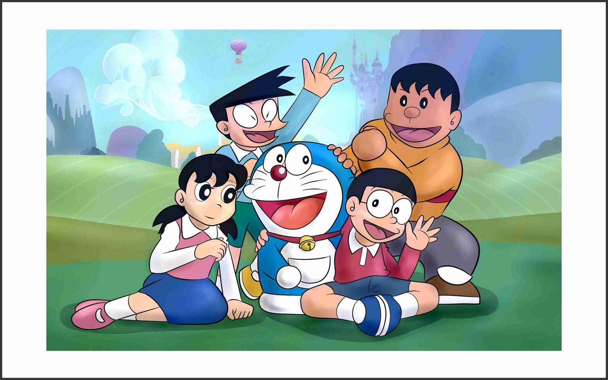

Doraemon
Doraemon (Japanese: ドラえもん [doɾaemoɴ]) is a Japanese manga series written and illustrated by Fujiko F. Fujio.The story revolves around an earless robotic cat named Doraemon, who travels back in time from the 22nd century to aid a boy named Nobita Nobi.
Here are some of our favourite gadgets, do let us know which one is your favourite
- Anywhere Door
- Time machine
- Small light
- Big light
- Take-copter

CHIRSTMAS' EXCLUSIVE OFFER!
GET DORAEMON TOYS FOR FREE!
Love what you see? Then without further ado, enjoy watching Doraemon via the given video link.
Doraemon Episodes